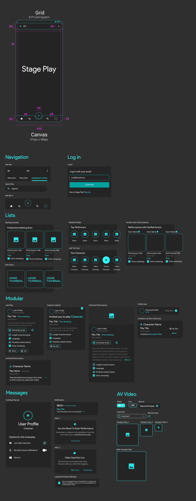

The brief
Stage Play is an app for amateur actors and theatre lovers. People browse plays that are about to start, pick a character, download the script and perform together live on video, while others watch. As a team, you will design the Stage Play interface from the schema below: the navigation, sign-in, lists, modular cards, messages and live-video screens.
This is a UI team project. The UX is decided for you; the challenge is to build a consistent, component-driven interface as a team, the way design teams work on real products.
Team roles
Work in teams of three or four. Agree these roles on day 1 (one person can hold two):
- Design system lead: owns the colour and type styles, the grid and the master components. Every change to a component goes through them.
- Screen designers (2): build the screens from the components, split by section of the schema.
- Prototype and QA lead: links the screens into a clickable flow and checks every screen against the parameters before the presentation.
Directives
Working as a team, produce a UI from the schema provided. Follow these parameters:
- Use master components
- Use the canvas provided (416 × 986 px)
- Use the 8-point grid system
- Use nested containment
- Use Auto Layout
- Use text properties
- Use swap properties
Deliverables
- One shared Figma file with pages for the design system, the components and the screens.
- A design system page: colour styles, text styles, grid and spacing tokens.
- Master components for every element in the schema, with variants and properties.
- At least eight screens, covering every section of the schema: navigation, log in, lists, modular cards, messages and AV video.
- A clickable prototype of one flow: sign in → find a play → pick a character → join the live performance.
- A five-minute team presentation of the system and the flow.
Day-by-day plan
| Day | Focus |
|---|---|
| 1 | Agree roles, read the schema together, set up the file, styles and grid |
| 2 | Build the master components: navigation, buttons, inputs, list items, cards |
| 3 | Build the screens from the components: log in, lists, modular cards |
| 4 | Messages and AV video screens; link the prototype |
| 5 | QA against the parameters, polish, and present |
Schema
The reference below sets out the canvas and grid (416 × 986 px, 8-point grid) and the components to build: navigation, log in, lists, modular cards, messages and AV video. Click it to open it full size.

Checklist
☐ Roles agreed and written at the top of the file
☐ Colour and text styles defined, and nothing on any screen is unstyled
☐ Every repeated element is an instance of a master component
☐ Components use Auto Layout, text properties and swap properties
☐ All screens use the 416 × 986 canvas and the 8-point grid
☐ The prototype flow works end to end
☐ Layers and pages are named so another team could pick up the file
Assessment
Your team is assessed on:
- System quality (40%): clean styles, well-built components with properties and variants, consistent spacing.
- Fidelity to the schema (30%): every section covered, matching the canvas, grid and parameters.
- Prototype (15%): the core flow works and feels like one product.
- Teamwork and presentation (15%): clear roles, a tidy shared file and a confident five-minute presentation.